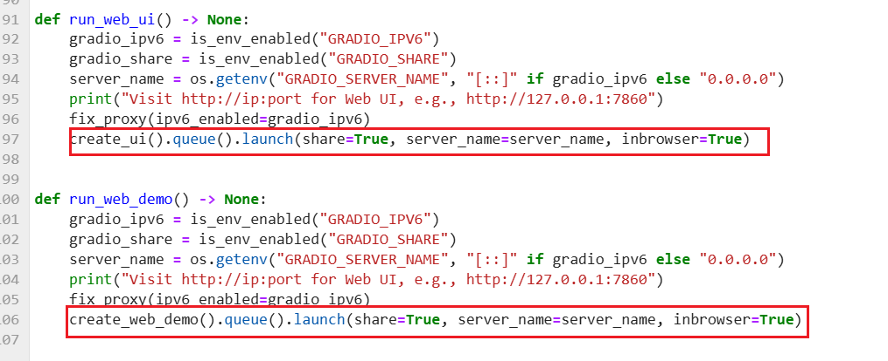
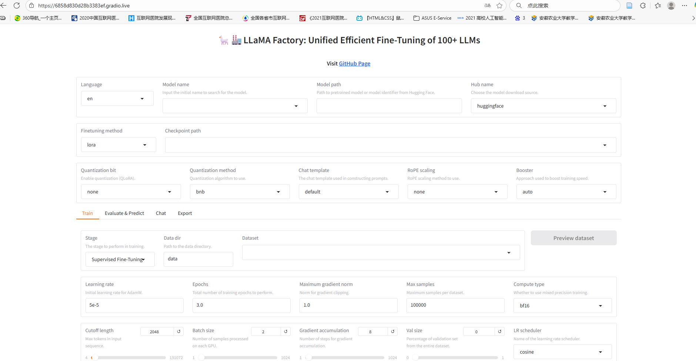

在华为云部署GLM-4-9B(基于LLaMA-Factory)
环境配置
创建Notebook实例
示例部署中使用的Notebook配置如下图红框所示，选择合适的镜像并设置好磁盘规格，确保不会出现超出存储限制的错误。
若在后续过程中出现磁盘大小不够的问题时，通过点击Notebook名称栏的超链接访问示例总览扩容硬盘。
创建LLaMA-Factory虚拟环境
等待实例创建完成后，点击打开进入JupyerLab操作界面。在Launcher界面选择创建Notebook打开，输入指令运行（点击运行按钮/Shift+enter）后创建python版本为3.10的虚拟环境。
1 | conda create -n llamafactory(环境名) python=3.10（版本号） -y |
在下载完成后，通过conda env list查看虚拟环境，若出现新环境名即为创建成功。接下来输入conda activate llamafactory激活虚拟环境后进行后续操作。
下载openMind相关组件
下载openMind Hub Client 和 openMind Library 并安装对应的PyTorch及其依赖
1 | pip install openmind_hub |
在下载过程中有时会出现以下错误：
- error 1：出现这一报错的原因在于缺失要求版本的numpy，根据要求下载对应的numpy即可解决。
下载失败可以使用numpy = 1.23.5
- error 2：出现这一问题的原因和error 1相同，根绝要求下载确实的内容跟即可解决，但是在实际运行过程中我们发现并不会受到这些错误影响，可以不予理会。
下载 LLaMA-Factory
LLaMA-Factory能够为我们提供简单且有效的LLM微调、训练等服务，具体的内容可以通过访问官方的git仓库和文档了解具体内容。
按照以下指令我们可以快速的安装LLaMA-Factory
1 | git clone https://github.com/hiyouga/LLaMA-Factory.git |
LLaMA-Factory的可视化操作界面设置
LLaMA-Factory为操作者提供了基于Gradio的可视化操作UI，可以通过网页对模型进行微调，训练，交流等应用，可以通过以下文件启动界面：
1 | llamafactory-cli webui |
我们发现gradio已经在本地url启动，但是由于我们是远程调用服务器所以无法使用。因此我们需要根据提示* To create a public link, set share=True in launch().来启动public url实现在访问。
启动Public url 生成
按照路径LLaMA-Factory -> src -> llamafactory -> webui -> interface.py打开interface文件修改run_web_ui和run_web_demo两个函数，将share=share=gradio_share修改为share=True

再次输入命令运行webui，发现出现以下的报错提示：
下载缺失文件
- 按照提示要求使用wget指令下载对应链接的文件（若显示下载超时等原因失败，可以在本地下载后上传）
1
wget https://cdn-media.huggingface.co/frpc-gradio-0.3/frpc_linux_arm64
- 修改下载文件的文件名至要求的frpc_linux_arm64_v0.3
- 将重命名后的文件转移至要求目录
/home/ma-user/.cache/huggingface/gradio/frpc1
mv frpc_linux_arm64_v0.3 /home/ma-user/.cache/huggingface/gradio/frpc
完成所有操作后，再次启动webui，发现生成public url的过程仍旧失败：
分配文件权限
出现以上问题的原因是因为我们并未分配权限给新转移的文件，在文件的对应目录下使用以下命令修改文件权限
1 | chmod +x frpc_linux_arm64_v0.3 |
修改后再次运行发现public url生成成功：
在本地访问生成的public url能够成功打开webui的操作界面：

下载模型并使用chat和模型交互
我们选择GLM-4-9b，并通过modelscope下载，点击loadmodelLLaMA-Factory会访问当前目录下是否含有对应model，若不存在就会下载对应模型。
输入prompt后webui提示生成过程出错，在命令行发现主要问题在于不存在_extract_past_from_model_output，这是因为llamafactory适配的transformers版本要求>=4.49 而缺失的模块在transformers==4.46.0中。
我们可以根据上面的报错信息修改下载GLM4模型目录下的modeling_chatglm.py文件内容，在Class ChatGLMForConditionalGeneration中加入自定义函数_extract_past_from_model_output如下：
1 | def _extract_past_from_model_output(self, outputs: ModelOutput, standardize_cache_format: bool = False): |
再次尝试发送Prompt后成功获得模型返回，以上就是本期全部适配内容。